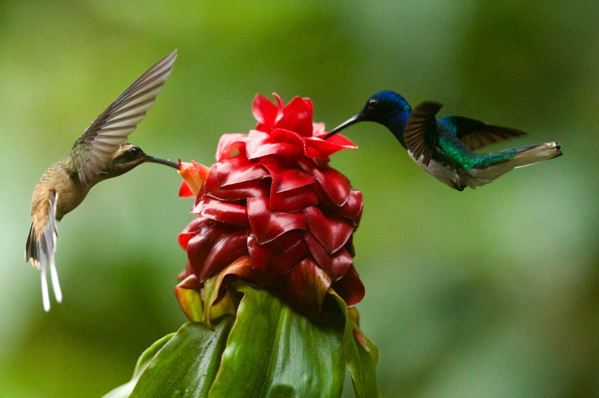

Hummingbirds are called such because of the humming
noise their wings create since they move so quickly.
Think you're the only one that could move backwards?
Well hummingbirds could fly backwards. They are also the only birds that could do so.
Hummingbirds are the smallest migrating bird. They
typically travel alone for up to 500 miles at a time. Something to think about on your next
solo road trip.